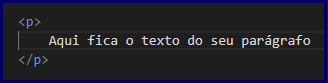

Na aula de hoje vamos aprender sobre a estrutura básica de um documento HTML, veremos que existem elementos fixos que devem ser usados em nossas páginas web.
Você já teve que desenvolver uma dissertação? Se sim, você deve lembrar que ela precisa ter uma introdução, um desenvolvimento e uma conclusão para estar completa.
Um documento HTML também tem elementos fixos que são definidos como padrão de desenvolvimento de qualquer página web. Nessa aula, veremos quais são esses elementos e quais suas características.
Primeiro vamos entender o que são as tags do HTML, pois no desenvolvimento desses documentos ambas são utilizadas em todo momento.
Tags são os nomes dados aos elementos do nosso site. Para formar uma tag nós escrevemos o nome da tag entre os símbolos < e >, como no exemplo abaixo.
As tags normalmente são usadas em pares, como no exemplo mostrado temos <nomeDaTag> e </nomeDaTag>, a primeira tag é a tag de abertura e a segunda é a tag de fechamento. Note que a diferença entre as duas é que a tag de fechamento tem uma barra inserida antes do nome da tag.
Para cada elemento de uma página web usamos uma tag. Imagine que você vai escrever um parágrafo no seu site; para criar o parágrafo usamos a tag <p>. Veja a seguir o exemplo de um parágrafo em HTML.

O que você percebe? Todo o texto do parágrafo deve ficar entre as tags <p> e </p>, que são respectivamente a tag de abertura e fechamento de um parágrafo.
Agora que você já sabe o que é uma tag no HTML vamos ver as tags usadas para criar a estrutura básica de uma página web.
Todo o conteúdo de um documento HTML deve estar dentro da tag chamada html. Veja abaixo um modelo de uso da tag html.
Perceba que todo o conteúdo da página vai ficar entre a abertura e fechamento da tag html, para abrir a tag escrevemos <html> e para fechá-la usamos o código </html>.
Dentro das tags html nós ainda temos dois elementos importantes que são a cabeça e o corpo do documento que veremos a seguir.
Na tag head que representa a cabeça do documento nós colocamos informações e algumas configurações sobre o documento que estamos desenvolvendo.
Nessa área podemos colocar o título do site que é exibido na guia do navegador, além de colocarmos informações sobre a formatação dos caracteres, configurações sobre como o documento vai se comportar em cada navegador, entre outras informações que veremos mais detalhadamente na aula prática (vídeo).
Dentro do head do documento também configuramos os arquivos de CSS e JavaScript que nossa página vai usar. Por enquanto estamos estudando apenas HTML, mas futuramente vamos começar a usar CSS e JavaScript.
Veja abaixo um protótipo de código HTML implementando a tag head.
Note que a tag head tem sua abertura <head> e seu fechamento </head>, além de ser escrita dentro da tag html.
É importante saber que o conteúdo escrito dentro da tag head não é exibido no site, apenas o conteúdo escrito no corpo do documento será exibido como veremos em seguida.
A tag body representa o corpo do documento, nela nós colocamo todo o conteúdo que será exibido em nosso site.
Dentro da tag body colocamos todos os textos, imagens, vídeos e áudios de nossas páginas web, tudo que será exibido no site devemos colocar dentro dessa tag.
Veja a seguir o modelo de código HTML implementando a tag body.
A tag body é aberta com o código <body> e fechada com o código </body>. Perceba que essa tag deve iniciar logo após o fechamento da tag head, e ela também deve ficar dentro da tag html que é a principal.
Ao criar nosso documento HTML precisamos indicar que ele é um documento HTML da versão 5 para quê os navegadores possam interpretá-lo de forma correta. Para isso usamos a tag especial doctype.
Esse tag deve ser escrita no início do documento HTML, acima da abertura da tag html. Veja abaixo como escrevê-la.
Como ela é uma tag especial não tem fechamento, sua única função é indicar ao navegador que a página deve ser interpretada como um documento HTML 5.
Nessa aula aprendemos sobre a estrutura básica de um documento HTML, vimos que ela é formada por três tags essências que são html, head e body.
Na tag <html> colocamos todos os elementos de nosso site, na tag <head> colocamos informações e configurações sobre o documento e na tag <body> colocamos todo o conteúdo que será exibido em nosso site como imagens, textos e vídeos.
Também vimos que as tags são muito importantes no desenvolvimento de documentos HTML, pois é através delas que nós conseguimos indicar quais elementos nosso site vai ter, além de serem usadas para montar toda a estrutura de nossas páginas web.
Caso você tenha ficado com dúvidas ou tenha alguma sugestão mande sua pergunta ou envie uma mensagem para nós, responderemos o mais rápido possível.
Na próxima aula vamos desenvolver nossa primeira página web colocando em prática o conteúdo estudado hoje além de conhecer novas tags do html.
Professor Digital. HTML: Tags HTML, Head e Body. Professor Digital, 2019. Disponível em: https://www.luis.blog.br/html-e-xhtml.html. Acesso em 08 de janeiro de 2020.
W3SCHOOLS. HTML Introdução. W3SCHOOLS.COM, 2019. Disponível em: https://www.w3schools.com/html/html_intro.asp. Acesso em 06 de janeiro de 2020.